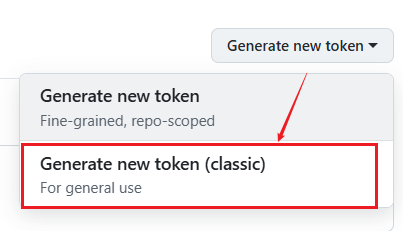
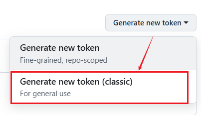

hexo基本配置和使用
nodejs 建议用nvm管理nodejs版本
nvm常用指令 1
2
3
4
5
6
7
8nvm -v 查看nvm版本
nvm ls 查看当前nodejs版本
nvm ls available 查看可获得的nodejs版本 可选LTS稳定版本
nvm install/nvm unisntall <version> 安装卸载版本
nvm use <version> 使用版本
node -v nodejs版本
npm-v npm版本
在使用nvm前，先将安装的nodejs卸载
Windows 中卸载nodejs
卸载程序 打开“控制面板”，选择“程序和功能”。 找到 Node.js，右键选择“卸载”。
删除相关文件夹 删除以下目录中的文件：
C:Files
C:<用户名>
C:<用户名>-cache 如果有自定义安装路径，也需删除对应的文件夹。
清理环境变量 打开“系统属性” > “高级” > “环境变量”。 检查并删除与 Node.js 或 npm 相关的路径。
验证卸载是否成功 打开命令提示符，输入： where node 如果没有返回路径，说明已成功卸载。
安装nvm 下载地址Releases · coreybutler/nvm-windows，这里我下载了1.1.12版本
nvm后续升级 下载新版本的安装包，安装时nvm路径和nodejs都和已有版本一致，安装完就升级到新版本了
设置镜像（可选，未实测） ##node淘宝镜像 node_mirror:https://npmmirror.com/mirrors/node/ ##npm淘宝镜像 npm_mirror:https://npmmirror.com/mirrors/npm/
也有写成的 node_mirror=https://npmmirror.com/mirrors/node/ npm_mirror=https://npmmirror.com/mirrors/npm/
1 | nvm install 14.14.0 |
下载完后，先切换到对应版本，再查看node和npm版本 1
2
3nvm use 14.14.0
node -v
npm -v
设置全局路径和缓存 1
2
3
4# 全局路径
npm config set prefix "xxx\node_global"
# 缓存
npm config set cache "xxx\node_cache"
记得设置系统环境变量
- 系统变量”中找到 Path，点击“编辑”。
- 添加以下路径： xxx_global xxx_global_modules.bin
查看当前的全局路径和缓存设置
1 | npm config get prefix |
![[Pasted image 20250801100456.png]]
什么是npx npx 是 npm 从 5.2.0 版本开始引入的命令行工具，用于简化执行项目依赖中的可执行脚本。它的主要功能是避免全局安装工具，同时提高开发效率。
核心功能 npx 的主要作用是直接运行本地或远程 npm 包中的命令，而无需手动安装。 自动查找项目中 node_modules/.bin 目录下的可执行文件。如果本地找不到对应的包，会临时从远程下载并执行，执行后自动删除。
window下安装并使用nvm（含卸载node、卸载nvm、全局安装npm）-CSDN博客 Hexo历险记之三本地安装Hexo - 知乎
查看所有可安装版本 1
npm view hexo-cli versions
安装最新版hexo： 方式一：安装hexo-cli（建议）
在后面运行初始化1
npm install -g hexo-cli
hexo init和安装依赖npm install的时候，其实就会一同下载hexo
尾缀CLI就是Command Line Interface也即是命令行
方式二：直接安装hexo 1
npm install -g hexo
安装指定版本hexo： 为了避免版本冲突，建议安装指定版本。 本篇版本为 ==node20.18.1 + hexo-cli 4.0.0==
1 | npm install -g hexo-cli@4.0.0 |
![[Pasted image 20250806193149.png]]
验证是否安装成功 hexo -v 查看hexo版本
如果是win，在安装过程中会出现SKIPPING OPTIONAL DEPENDENCY等警告，不用管 ![[Pasted image 20250801101832.png]]
1. 开始使用hexo
1 | hexo init <blogName> |
<blogName>是博客目录名，将<blogName>替换为你想为你的博客目录命名的任何名称。这个命令创建一个新目录，并包含必要的Hexo文件，如下所示。
![[Pasted image 20250801110453.png]]
比如 初始化一个名为blog的博客仓库 1
hexo init blog
等价于创建博客目录blog后再init 1
2
3mkdir blog
cd blog
hexo init
!注意：建立博客目录后，往后的终端指令都在xxxx/blog路径下，右键打开git Bash后，执行，并且在以后想要发布网页的时候也需要在该文件夹下执行指令。
创建一个自己的markdown文件 hexo new
“我的第一篇hexo博客”，会生成我的第一篇hexo博客.md文件会放在博客目录的 ./source/_posts/ 目录下
注意：hexo init之后默认会生成一个hello-world.md
![[Pasted image 20250801165339.png]]
用编辑器编辑文档内容，并保存 ![[Pasted image 20250801165552.png]]
npm install安装必要的依赖项 ![[Pasted
image 20250801110732.png]]1
npm install
hexo g生成 ![[Pasted image 20250806193846.png]]
hexo s启动本地预览，可以实时修改新增，修改和预览博客，或修改主题设置
![[Pasted image 20250801113523.png]]
浏览器打开网址：http://localhost:4000/，可以看到 注意不要只打开
localhost，要输入完整的网址，ctrl+c 退出预览 ![[Pasted image
20250801170005.png]]
==hexo clean每次生成前都要用吗==： 说是在hexo s或hexo d前需要，以避免主页未同步问题。hexo g之前不用
一个非常常用的指令，直接清理，生成，预览一条龙 1
hexo cl && hexo g && hexo s
hexo常用命令 1
2
3
4
5
6
7
8
9
10# 在博客目录下执行
hexo new "postName" #新建文章
hexo new page "pageName" #新建页面
hexo generate #生成静态页面至public目录， 用`/source/_posts/`文件夹下的所有MD文件渲染生成新的`/public/`缓存
hexo server #开启预览访问端口（默认端口4000，'ctrl + c'关闭server），提供访问`/public/`文件夹的页面
hexo deploy #部署到GitHub
# 可在任意目录下执行
hexo help # 查看帮助
hexo version #查看Hexo的版本
对应缩写 1
2
3
4hexo n == hexo new
hexo g == hexo generate
hexo cl == hexo clean
hexo s == hexo server
2. 部署到github主页
静态网站托管服务使用 Github Pages ，github的这个服务是免费的，因此很多个人博客都会使用这个服务，并且免去了各种意义上的麻烦，包括穷的麻烦。 以下是 Github Pages 的官方文档：
Github
Pages
新建一个github仓库 给仓库起个名称，注意！注意！注意！用户名必须用github账号的用户名
仓库名称格式： 用户名.github.io
编辑博客目录下的_config.yml 拉到文件最后：填入 1
2
3
4deploy:
type: git
repository: git@github.com:Rich-Chaw/Rich-Chaw.github.io.git
branch: main
![[Pasted image 20250801160310.png]]
这里我使用ssh，注意在git bash下用ssh -T git@github.com
检查ssh能否连通，出现如下信息表示能连通
![[Pasted image 20250801163354.png]] 如果不能，参阅 [[Git-SSH]]
也可以用http，未测试，不确定需不需要额外的配置
![[Pasted image 20250807195458.png]]
运行完 hexo d 之后，博客目录下会出现.deploy_git文件夹，点进去可以看到它和git仓库main分支里的内容是一致的，是对博客目录下public文件夹中的同步
直接访问github的域名：https://你的用户名.github.io/
可以看到和用hexo s本地预览的界面是一致的 ![[Pasted image
20250801165843.png]]
全局安装，会下载到指定的node_global目录里 1
2npm install -g <package_name>
npm uninstall -g <package_name>
卸载后，可以清除缓存 1
npm cache clean -f
检查 node_modules 目录是否已移除对应包 1
2ls node_modules # Unix 系统
dir node_modules # Windows 系统
常见问题： hexo s后无法用Ctrl+c 停止预览
对于windows：关闭当前git
bash窗口，在cmd窗口中关闭端口4000对应的pid后，再新建git bash窗口
对于linux：ps aux | grep hexo 命令查找正在运行的 hexo 进程。 找到进程的
PID（进程 ID），然后使用 kill -9 <PID>
注意：
直接在新建的git bash窗口中运行hexo s，会出现
![[Pasted image 20250801151439.png]]
因此，新建之前，一定要在cmd窗口中关闭端口4000对应的pid
（在git bash下可能会关闭不了，会出现看不懂的乱码！）
在cmd下查看端口对应的进程，并关闭进程 查看所有进程
1 | netstat -ano |
查看想要查看端口的进程信息
1 | netstat -ano | findstr 4000 |
![[Pasted image 20250801150434.png]]
这里说明进程18508，占用了端口4000，终止进程 18508
taskkill /pid <进程id> -f ![[Pasted image 20250801150449.png]]
windows查看端口占用和结束端口进程_window-CSDN博客
![[Pasted image 20250801161847.png]] 1. 安装 hexo-deployer-git 插件
要解决这个问题，需要安装 hexo-deployer-git 插件。
在博客目录下打开git
bash，运行安装指令，这个安装指令没有-g，因此会安装在博客目录下
1
npm install hexo-deployer-git --save
hexo clean && hexo generate && hexo deploy
公式测试
这是加粗，这是斜体，这是一条$行内公式
$\frac{x_i}{y_{t_i}}$
块公式$$ $$
\begin{aligned}
y &= w_i*x_i +b\\
&= WX+b
\end{aligned}
$$
这是 行内公式，
hexo-math渲染的 mathjax：
损失函数-InfoNCE

机器学习领域，尤其是无监督学习和表示学习中，对比学习（Contrastive Learning）已经成为一种非常流行的方法。通过最大化与正样本的相似性，同时最小化与负样本的相似性，使得训练模型能区分“相关”和“不相关”的数据对，从而捕获数据的深层语义信息。
其中，InfoNCE Loss 是一种广泛使用的损失函数。 InfoNCE loss ： $$\mathcal{L}_N = -\mathbb{E}_X \left[ \log \frac{f_k(x_i, c_t)}{\sum_{x_j \in X} f_k(x_j, c_t)} \right] \tag{4}$$
InfoNCE 全称是 Info Noise-Contrastive Estimation Loss，基于噪声对比估计（Noise-Contrastive Estimation, NCE）。
在InfoNCE Loss的背后， 首次提出：CPC[Contrastive Predictive Coding] [1807.03748] Representation Learning with Contrastive Predictive Coding 应用：对比学习，大模型训练如 CLIP[Contrastive Language-Image Pretraining]所采用。 [2103.00020] Learning Transferable Visual Models From Natural Language Supervision
1. CPC
CPC简介:来着google DeepMind 2019 [CPC-Representation Learning with Contrastive Predictive Coding]：基于对比预测编码的表示学习 PPT：Representation Learning with Contrastive Predictive Coding
- CPC是一个unsupervised representation learning 方法。比起有监督学习，更能学到不针对单个有监督任务特化的特征（即表示，representation）
- 它可以用于序列数据(文本、语音信号等)，也可以用于图片和强化学习
在无监督的情况下，如何定义训练目标（定义表示的好坏）？ 最常见的思路是预测编码（predictive coding），即学到的表示要能够用来 预测未来（future） 或 预测缺失词（missing） 或 预测上下文（context）。比如词嵌入模型Word2Vec中的CBOW和Skip-gram，分别对应后两个预测目标。
CPC 假设预测编码方法的有效性来自于：预测目标值的上下文通常有条件地依赖于相同的共享的高层潜在信息。并且通过将其作为一个预测问题，能自动推断包含潜在信息的特征来进行表示学习。
CPC希望学习到的这个表示能预测未来。
设当前的上下文为 c ，预测未来目标为 x， 如果用生成模型来建模 p(x|c)（条件概率分布） 在高维数据中非常困难，因为它需要生成数据的每一个细节。而且单模态损失如均方误差和交叉熵并不是很有用。
CPC的做法是：让 c 和 x 之间的表示保留尽可能多的互信息 (Mutual Information, MI)。这样的表示能编码高维输入信号不同部分之间的潜在共享信息（latent shared information），并且丢弃低维信息和局部噪声
x 和 c 的互信息定义为 $$I(x;c)=\sum_{x,c}p(x,c)\log\frac{p(x|c)}{p(x)} \tag{1}$$ > 互信息（Mutual Information）：指变量间的相关性，通常用I(X;Y)表示X和Y之间的互信息，表示引入Y后使X的不确定度减小的量，I(X;Y)越大可以说明两者关系越密切

在这个图里，raw data是最下面的语音信号，在这条语音信号上选取一些时间窗口（frames），每一个frame作为输入x，构成序列 {xt}，
CPC用一个encoder genc（比如AutoEncoder或者CNN），对每个 xt 编码得到 latent vector zt = genc(xt)** ，为了做预测，把序列{zt}放到一个可以做预测的，有回归性质的模型 gar 里（比如RNN），用 t 及其之前的frames为输入 {z ≤ t} ，得到 ct = gar(z ≤ t)
按上节所说，CPC的巧妙之处在于，它不直接建模 (p(xt + k|ct))，而是用一个评分函数 fk(xt + k, ct) 建模数据的条件分布与独立分布之间的密度比， $$f_k(x_{t+k}, c_t) \propto \frac{p(x_{t+k}|c_t)}{p(x_{t+k})} \tag{2}$$ 右项的密度比来自互信息方程(1)，衡量的是xt + k在给定 ct 的条件下出现的可能性，相比它独立出现的可能性。如果 xt + k 和 ct 高度相关，这个比值会很大；如果不相关，则接近 1 或更小。
左项评分函数fk(xt + k, ct)计算为， fk(xt + k, ct) = exp(zt + kTWkct) 直接用线性矩阵 W1, W2, …, Wk 乘以 ct 做预测（也可以用RNN做）得到 ẑt + k = Wkct，然后用向量内积来衡量 ẑt + k 和zt + k的相似度。
现在问题来到怎么训练使评分函数 fk()真的能估计密度比呢？ **CPC设计了基于NCE的 InfoNCE Loss 如下： $$\mathcal{L}_N = -\mathbb{E}_X \left[ \log \frac{f_k(x_{t+k}, c_t)}{\sum_{x_j \in X} f_k(x_j, c_t)} \right] \tag{4}$$
- X = {x1, …, xN}是一个样本集，包含
- 1个正样本(positive sample)，与上下文 ct 相关，采样自 p(xt + k|ct)，即正在用的那条语音信号K步之内的frame xt + k
- N − 1 个负样本(negative/noise sample），与上下文 ct 无关，采样自 p(xt + k)，即K步之外的frame或从其他条的语音信号里随机选择的一个frame xj
- fk(xt + k, ct) 是一个评分函数，表示正样本对 (xt + k, ct) 的匹配程度。∑xj ∈ Xfk(xj, ct) 是正样本和所有负样本评分的总和。
genc和gar还有线性矩阵都进行联合训练以最小化InfoNCE loss， zt和ct均可作为表示。当过去的信息有用时ct ，当不需要额外上下文信息时zt。
直观来看，最小化InfoNCE loss将最大化正样本的评分 fk(xt + k, ct) 相对于所有样本评分之和的比例，实际上是在训练模型识别“真正相关的样本对”，使 ct 的预测和正样本 xt + k 的表示相似（接近）。但如何解释InfoNSE真的能使评分函数 fk()估计密度比呢？
1.1. InfoNCE背后的原理
如果能证明InfoNCE真的能使评分函数 fk()估计密度比。那么最大化正样本的评分 fk(xt + k, ct) 就能最大化密度比$\frac{p(x_{t+k}|c_t)}{p(x_{t+k})}$
证明： InfoNCE loss ： $$\mathcal{L}_N = -\mathbb{E}_X \left[ \log \frac{f_k(x_i, c_t)}{\sum_{x_j \in X} f_k(x_j, c_t)} \right] \tag{4}$$
InfoNCE loss在形式上是分类交叉熵， $\frac{f_k}{\sum_Xf_k}$是 第i个样本xi 类别为正样本的预测概率，以下改写为 p(d = i|X, ct)。
最小化InfoNCE loss等价于最大化预测 xi 类别为正样本的概率
回忆一下，我们是构造了一组随机样本X = {x1, ⋯, xN}，里面有一个正样本xi ，采样自xi ∼ p(x|c)。而其余的是负样本xl ≠ i，采样自p(x)
p(d = i|X, ct)可以计算为 $$\begin{gathered}p(d=i|X,c_{t})=\frac{p(x_i|c_t)\prod_{l\neq i}p(x_l)}{\sum_{j=1}^N [p(x_j|c_t)\prod_{l\neq j}p(x_l)]}\\=\frac{\frac{p(x_i|c_t)}{p(x_i)}}{\sum_{j=1}^N\frac{p(x_j|c_t)}{p(x_j)}}.\end{gathered} \tag{5}$$
从上式可以证明，式(4)中fk(xt + k, ct) 与密度比$\frac{p(x_{t+k}|c_t)}{p(x_{t+k})}$成正比，与负样本个数N − 1的选择无关。
也就是说 最小化InfoNCE loss等价于最大化预测 xi 类别为正样本的概率，等价最大化了密度比$\frac{p(x_{t+k}|c_t)}{p(x_{t+k})}$
附录证明了最小化InfoNCE loss，不仅最大化密度比$\frac{p(x_{t+k}|c_t)}{p(x_{t+k})}$，也确实最大化 xt + k和 ct 之间的互信息的下限 I(xt + k, ct) ≥ log (N) − ℒN InfoNCE：互信息噪声对比估计_哔哩哔哩_bilibili
2. Experiment
强调：CPC学到的是表示，能预测的也是表示
CPC论文里做了语音信号，视觉、自然语言和强化学习的实验 ### 2.1. Audio 使用公开的LibriSpeech英语语音数据集的100小时子集[30]。该数据集只提供原始文本，没有额外的标签。该数据集包含了251个不同speaker的语音。每10ms作为一个frame，通过Kaldi工具包[31]和在Librispeech上预训练的模型获得了对齐的phone标签。在长度为20480的采样音频窗口上进行训练。
- phoneme（音位）是语音学中最小的有区别性的单位，表示在某种语言中具有区分意义的音。
- phone（音素）是phoneme的具体实现形式，指的是实际发出的声音。 简单来说，phoneme是一个抽象的概念，而phone是其具体的发音表现形式。
预测语音信号未来1-20个frame的latent vector z 的平均准确率。 
对gar的输出ct (256维)，使用线性逻辑回归分类器分类。phone分类和speaker分类的准确性。
梅尔频率倒谱系数（MFCC） 是语音识别中广泛使用的一种特征提取方法。

两项针对phone分类的CPC消融研究。 -
改变了预测步数，这表明预测多步对于学习有用的表示是重要的 -
固定预测步数为12， - mixed speaker，负样本包含不同speaker的语音信号 -
same speaker：与相同说话人实验(第二行)相反。 -
在第三个和第四个实验中，排除当前语音信号，从(因此,
X中只存在小批量数据中的其他例子)中提取负样本， -
在最后一个实验中，只提取序列(因此所有样本均来自同一说话人)中的负样本。

2.2. Natural Language
做的是transfer learning实验，严格遵循了Skip-thought[ 26 ]的步骤。首先在BookCorpus数据集[42]上学习无监督模型，在一组新数据集上做句子（sentence）分类任务。为了处理在训练过程中没有看到的单词，采用与Skip-thought相同的方法进行词扩展，即在word2vec和模型学习到的词嵌入之间构建一个线性映射。
电影评论情感(MR) [43]，客户产品评论(CR) [44]，主客二分(subj)[45]，观点极性(MPQA) [46]和问题类型分类(TREC) [47]。
Paragraph-vector 无监督的句子级表示学习方法。 Skip-thought[26]在Word2Vec的基础上使用LSTM做单词预测，并使用最大似然对观测序列进行预测。Skip-thought LM 是加了Layer Norm。就是上文说的用生成模型来做预测，相对于CPC来说更难训练得多。

2.3. vision
训练过程如下：从一幅256 × 256的图像中提取一个由64 × 64 的patch组成的7 × 7网格，重叠32个像素。
然后通过ResNet-v2-101编码器对每个patch进行编码。使用类似 pixelCNN
的自回归模型将其转化成一个序列类型，用前几个 patch 作为输入，预测之后的
patch。 
ImageNet top-1非监督分类结果 计算机视觉中，常对跟踪到的视频块使用三元组损失（Triplet loss），使得来自同一对象在不同时间步的块比随机块更相似。[11、29]提出预测图像中块的相对位置，在[10]中颜色值是从灰度图像中预测的。
==啥是三元组损失== [FaceNet：A Unified Embedding for Face Recognition],参阅 深度学习之三元组损失原理与选取策略_三元组损失函数效果特别差-CSDN博客

2.4. Reinforcement Learning
在DeepMind Lab [51]的3D环境中评估了所提出的无监督学习方法在五种强化学习中的表现：room _ watermaze，explore _ goal _ location _ small，searchvoid _ arena _ 01，lasertag _ three _ opposites _ small和room _ key_doors_puzzle。 以批量A2C [52] agent为基本模型，并添加CPC作为辅助损失，使学习到的表征编码了关于未来观测的分布。不使用重放replay buffer，因此预测结果必须适应策略的变化行为。

黑色：批量A2C基线，红色：辅助对比丢失
深入解析 InfoNCE Loss：对比学习的基石-CSDN博客 什么是互信息（Mutual Information, MI）？CSDN博客 理解Contrastive Predictive Coding和NCE Loss - 知乎
噪声对比估计-NCE
NCE目标函数：
$$ \begin{eqnarray} \nabla\cdot\vec{E} &=& \frac{\rho}{\epsilon_0} \\ \nabla\cdot\vec{B} &=& 0 \\ \nabla\times\vec{E} &=& -\frac{\partial B}{\partial t} \\ \nabla\times\vec{B} &=& \mu_0\left(\vec{J}+\epsilon_0\frac{\partial E}{\partial t} \right) \end{eqnarray} $$
$$ \begin{aligned} y &= w_i*x_i +b \\ &= WX+b \end{aligned} $$ 的的 $$ \begin{aligned} J^c &= x\\ &= x \\ &= y \\ \end{aligned} $$
最早提出NCE思想的论文 Noise-Contrastive Estimation of Unnormalized Statistical Models-2010 Noise-Contrastive Estimation of Unnormalized Statistical Models, with Applications to Natural Image Statistics-2012 给出了具体的NCE算法，本文主要参考来源于此 A fast and simple algorithm for training neural probabilistic language models-2012
回顾一下分布的知识： 设真实数据概率分布的概率密度函数为 Pd(⋅) ，以下简称分布 Pd(⋅)。机器学习的主要目标是 用一个参数为 θ 的分布 Pθ(⋅) 估计 Pd(⋅)，Pθ(⋅)称为预测概率分布
如果能知道Pθ(⋅)的形式，比如是正态分布或指数分布，那么可以直接学习 θ 的值。 但大部分情况下我们并不知道具体形式，所以是对每个给定数据的估计概率值，也就是直接学习概率分布。
概率分布要满足积分为1，即 ∫P(x)dx = 1
一般情况下，预测概率分布需要通过归一化，来保证满足积分为1的条件 $$P_\theta(\cdot)=\frac{\hat{P}_\theta(\cdot)}{Z_\theta}$$ 其中分子是非归一化的概率分布，分母 Zθ 是配分函数（Partition Function）也称为归一化常数 （Normalized Constant） 或 Marginalized Evidence
用神经网络来估计为例 logits 层的输出 是非归一化的概率分布 经过softmax层之后才是 归一化的概率分布
1. NCE: Noise Contrastive Estimation
A fast and simple algorithm for training neural probabilistic language models NCE 是一个机器学习的方法，不涉及神经网络 - 学习一个参数来表示 Zθ - 学习一个能区分 从真实数据分布和噪声分布采样数据的模型的模型
假设我们的数据是文本，任务是根据给定的上下文context c，预测目标target为单词 w ，希望学习到一个参数为θ（用θ参数化）的预测分布来估计/建模真实分布： P(w|c) ≈ Pθ(w|c) 让我们假设预测分布 Pθ 服从某一个指数族分布，任务是学习该分布的参数θ 值 $$P_\theta(w|c)=\frac{\exp\{s_\theta(w,c)\}}{\sum_{w\in V}\exp\{s_\theta(w,c)\}}=\frac{u_\theta(w,c)}{Z_\theta}$$ V为词汇表，Sθ(w, c)是参数为 θ 的评分函数，它量化了词w与上下文c的相容性，一般定义为向量点积
1.1. ML method
在机器学习（ML）方法中，是通过最大似然估计（Maximum likelihood estimation,MLE）(假设所有样本之间相互独立)来优化参数 θ，目标函数为最大化对数似然log Pθ(w|c)的期望：
maxθLc(θ) = maxθ𝔼w ∼ P(w|c)[log Pθ(w|c)] 这个期望展开为 𝔼w ∼ P(w|c)[log Pθ(w|c)] = ∑w ∈ VP(w|c)log Pθ(w|c)
对应的损失函数为 负对数似然log Pθ(w|c)的期望 ℒMLE = −Lc(θ) = −𝔼w ∼ P(w|c)[log Pθ(w|c)] = −∑w ∈ VP(w|c)log Pθ(w|c) 可以看到，这个其实就是类别数为 |V| 的多分类交叉熵，
梯度为 $$\begin{aligned}\frac{\partial}{\partial\theta}L^c(\theta)&=\frac{\partial}{\partial\theta} \mathbb{E}_{w\sim P(w|c)}\left[\log P_{\theta}(w|c)\right]\\&=\frac{\partial}{\partial\theta}\mathbb{E}_{w\sim P(w|c)}\left[\log\frac{\exp\{s_\theta(w,c)\}}{Z_\theta}\right]\\ &=\frac{\partial}{\partial\theta}\mathbb{E}_{w\sim P(w|c)}s_\theta(w,c) - \frac{\partial}{\partial\theta} logZ_\theta\\ &=\sum_{w\in V}[P(w|c)-P_\theta(w|c)]\frac{\partial}{\partial\theta}s_\theta(w,c) \end{aligned}$$
实际计算中，给定一个在上下文 c 中观察到的词 w，就对Lc(θ)求一次梯度，P(w|c) 只对观察到的词 w，为1： $$ \begin{aligned}\frac{\partial}{\partial\theta}L^c(\theta)&=\sum_{w\in V}[P(w|c)-P_\theta(w|c)]\frac{\partial}{\partial\theta}s_\theta(w,c)\\ &=\frac{\partial}{\partial\theta}s_\theta(w,c)-\sum_{w\in V}\frac{\exp s_\theta(w,c)}{\sum_{w\in V}\exp\{s_\theta(w,c)\}})\frac{\partial}{\partial\theta}s_\theta(w,c) \end{aligned} $$
优化他有些困难的，在计算梯度时计算词汇表中所有单词的sθ(w, c)来求 Pθ(w|c) 中的Zθ
论文里提到了Importance sampling 来解决 Zθ 计算复杂度高的问题，但是存在一些缺点。
1.2. NCE method
噪声对比估计（Noise-Contrastive Estimation，NCE）:一种参数学习方法
不是通过最大似然估计直接求参数，而是通过对比来求参数，任务是学习一个能区分从真实数据分布和噪声分布采样数据的模型，从而学习到 Pθ(w|c)
这个模型其实就是一个二元分类器 Pθ(D|w, c) ，来估计P(D|w, c) ，标签D=1或0分别表示 w 是来自真实数据分布 P(w|c) （论文中称为 Pdc ），还是噪声分布 P(w) （论文中称为 Pn ）
二元分类器可以通过逻辑回归来进行学习。
在噪声对比估计中，往往在数据分布 P(w|c) 中采样1个正样本w，标签D=1。然后从噪声分布 P(w) 中采样k个负样本w，标签D=0
也就是说，这k+1个样本构成的样本集X来自分布 $\frac{1}{k+1}P(w|c) + \frac{k}{k+1}P(w)$
那么标签D=1，即样本来自真实分布 P(w|c)的后验概率为 $$P(D=1|w,c)=\frac{P(w|c)}{P(w|c)+kP(w)}$$
由于我们希望用Pθ(w|c)拟合P(w|c)，所以我们用Pθ(w|c)代替方程中的P(w|c)，使后验概率成参数θ的函数： $$P_\theta(D=1|w,c)=\frac{P_\theta(w|c)}{P_\theta(w|c)+kP(w)}$$
我们简单地在真实数据和噪声样本的混合下得到的一个样本集X上做优化，最大化对数似然logPθ(D|w, θ)的期望值 $$\begin{aligned}\max_\theta J^c(\theta)&=\max_\theta \mathbb{E}_X[log P_\theta( D | w , θ)] \\&=\max_\theta \left(\mathbb{E}_{P(w|c)}\left[\log\frac{P_\theta(w|c)}{P_\theta(w|c)+kP(w)}\right]+k\mathbb{E}_{P(w)}\left[\log\frac{kP(w)}{P_\theta(w|c)+kP(w)}\right] \right)\end{aligned}$$
对Jc(θ) 求梯度 $$\begin{aligned}\frac{\partial}{\partial\theta}J^c(\theta)&= \frac{\partial} {\partial\theta}\left(\mathbb{E}_{P(w|c)}\left[\log\frac{P_\theta(w|c)}{P_\theta(w|c)+kP(w)}\right]+k\mathbb{E}_{P(w)}\left[\log\frac{kP(w)}{P_\theta(w|c)+kP(w)}\right] \right) \\ &=\mathbb{E}_{P(w|c)}\left[\frac{kP(w)}{P_\theta(w|c)+kP(w)}\frac{\partial} {\partial\theta}\log P_\theta(w|c)\right]-k\mathbb{E}_{P(w)}\left[\frac{P_\theta(w|c)}{P_\theta(w|c)+kP(w)}\frac{\partial} {\partial\theta}\log P_\theta(w|c)\right]\\ &=\sum_{w\in V}(P(w|c)-P_\theta(w|c))\frac{kP(w)}{P_\theta(w|c)+kP(w)}\frac{\partial}{\partial\theta}\log P_\theta(w|c)\end{aligned}$$
当 k → ∞，趋近于最大似然的梯度 $$\frac{\partial}{\partial\theta}J^c(\theta)\to\sum_{w\in v}(P(w|c)-P_\theta(w|c))\frac{\partial}{\partial\theta}\log P_\theta(w|c)$$
实际训练过程中，给定一个在上下文c中观察到的词w，我们通过生成k个噪声样本x1, …, xk，w对梯度的贡献为 $$\begin{aligned}\frac{\partial}{\partial\theta}J^c(\theta)=&\frac{kP(w)}{P_{\theta}(w|c)+kP_{n}(w)}\frac{\partial}{\partial\theta}\operatorname{log}P_{\theta}(w|c)-\\&\begin{aligned}\sum_{i=1}^k\left[\frac{P_\theta(x_i|c)}{P_\theta(x_i|c)+kP(x_i)}\frac{\partial}{\partial\theta}\log P_\theta(x_i|c)\right]\end{aligned}\end{aligned}$$
注意 $\frac{P_\theta(x_i|c)}{P_\theta(x_i|c)+kP(x_i)}$ 的值一定在0到1之间，不像importance sampling的方法一样会变得方差很大，基于NCE的学习是很稳定的
上文所述的 Jc(θ) 用于学习对某一个上下文c的分布p(w|c)，称为局部NCE目标函数
通过使用经验上下文概率P(c)作为权重来组合每个上下文c的NCE目标，定义全局NCE目标函数 J(θ) = ∑cP(c)J(θ)
1.3. Dealing with normalizing constants
如上文所述， Pθ(w|c) 中的Zθ难以计算。NCE通过避免显式归一化和将Zθ作为要学习的参数处理这一问题。因此，模型被参数化为一个参数为 θ0 非归一化分布Pθ0(w|c)和一个参数ϕ用于表示Zθ的对数 Pθ(w|c) = Pθ0(w|c)exp (ϕ) 那么 参数 θ = {θ0, ϕ} 每对一个上下文 c 都需要学习一个对应的 ϕ，这使得难以扩展到具有大规模上下文的情况。
1.3.1. negative sampling 负采样
论文发现将Zθ固定为1效果也很好，使用 Zθ = 1 时的Jc(θ) 作为目标函数的方法为称为 负采样。
比如用负采样改进的了word2vec $$\begin{aligned}P(D=0\mid w,c)&=\frac{1}{u_\theta(w,c)+1}\\P(D=1\mid w,c)&=\frac{u_\theta(w,c)}{u_\theta(w,c)+1}.\end{aligned}$$ uθ(w, c) = exp {sθ(w, c)}
Notes on Noise Contrastive Estimation and Negative Sampling [NLP复习笔记] Word2Vec: 基于负采样的 Skip-gram 及其 SGD 训练 - 博客园
1.4. 复杂度
假设c是上下文大小，d是单词特征向量维度，V是模型的词汇量大小。
利用公式计算预测表示，NCE和ML学习都需要进行cd2操作。 对于ML，从预测的表示中计算下一个单词的分布大约需要Vd个操作。 对于NCE，在k个噪声样本下的分类为正样本的概率大约需要kd次操作 由于 k<<|V|，所以NCE大大提升了计算速度
1.5. 总结
总结一下，NCE做了两件事 - 更改了目标函数，任务从多分类问题到二分类问题 - 验证了 Zθ 在基于NCE的训练中可以直接设为1
2. 扩展阅读，另一个博主的推导
感觉还是原论文里写的更精炼
NCE噪声对比估计_哔哩哔哩_bilibili中对NCE的推导： 在给定 c 的情况下，正负样本的概率分别为 $$\begin{aligned}P(d=1,w|c)\:=P(w|d=1,c)P(d=1|c)&=P(w|d=1,c)P(d=1)\\&=P(w|d=1,c)\frac{1}{1+k}\end{aligned}$$ $$\begin{aligned}P(d=0,w|c)\:=P(w|d=0,c)P(d=0|c)&=P(w|d=0,c)P(d=0)\\&=P(w|d=0,c)\frac{k}{1+k}\end{aligned}$$ 通过对 d 求和，可以得到概率 P(w|c) $$\begin{aligned}P(w|c)=\sum_dP(d,w|c)&=P(d=1,w|c)+P(d=0,w|c)\\&=P(w|d=1,c)\frac{1}{1+k}+P(w|d=0,c)\frac{k}{1+k}\end{aligned}$$
噪声对比估计的目标函数不再是最大化对数似然，而是 max {𝔼w ∼ P(w|d = 1, c)[log Pθ(d = 1|w, c)] + k𝔼w ∼ P(d = 0|w, c)[log Pθ(d = 0|w, c)]} P(w|d=1,c)}其实就是 正样本的分布P_d P(w|d=0,c)}噪声分布 P(w|d=0,c)} P_n
展开： $$\begin{aligned}&\mathbb{E}_{w\sim P(w|d=1,c)}\left[\log P_\theta(d=1|w,c)\right]+k\mathbb{E}_{w\sim P(w|d=0,c)}\left[\log P_\theta(d=0|w,c)\right]\\ &=\mathbb{E}_{w\sim P(w|d=1,c)}\left[\log\frac{P_\theta(w|d=1,c)}{P_\theta(w|d=1,c)+kP(w|d=0,c)}\right]+k\mathbb{E}_{w\sim P(w|d=0,c)}\left[\log\frac{kP(w|d=0,c)}{P_\theta(w|d=1,c)+kP(w|d=0,c)}\right]\\ &= \sum_wP(w|d=1,c)\frac{kP(w|d=0,c)}{P_\theta(w|d=1,c)+kP(w|d=0,c)} \frac{\partial}{\partial\theta}\log P_\theta(w|d=1,c)-\sum_wP(w|d=0,c)\frac{kP_\theta(w|d=1,c)}{P_\theta(w|d=1,c)+kP(w|d=0,c)}\frac{\partial}{\partial\theta}\log P_\theta(w|d=1,c) \end{aligned}$$ 可以证明： 当 k → ∞ 时，并把 logZθ(c) 当做常数 ，有 $$\begin{aligned}&\frac{\partial}{\partial\theta}\left[\mathbb{E}_{w\sim P(w|d=1,c)}\left[\log P_\theta(d=1|w,c)\right]+k\mathbb{E}_{w\sim P(w|d=0,c)}\left[\log P_\theta(d=0|w,c)\right]\right]\\&=\sum_w\left[P(w|d=1,c)-P_\theta(w|d=1,c)\right]\frac{\partial}{\partial\theta}s_\theta(w,c)\end{aligned}$$ 可以发现： 在这个情况下，最大化噪声对比估计 等价与最大化似然
我们可以用蒙特卡洛采样法去近似期望，即从数据分布中采样m个点，然后从噪声分布中采样n个点 $$=\frac{1}{m}\sum_{w}\log\frac{P_{\theta}(w|d=1,c)}{P_{\theta}(w,|d=1,c)+kP(w|d=0,c)}+\frac{k}{n}\sum_{w^{-}}\log\frac{kP(w^-|d=0,c)}{P_{\theta}(w^-|d=1,c)+kP(w^-|d=0,c)}$$
当m=1,n=k。那么为 $$\log\frac{P_\theta(w|d=1,c)}{P_\theta(w|d=1,c)+kP(w|d=0,c)}+\sum_{w_-}\log\frac{kP(w|d=0,c)}{P_\theta(w|d=1,c)+kP(w|d=0,c)}$$
负采样是NCE的一种特殊情况，即让归一化项Zθ固定为常数1且令$kP(w|d=0,c)=1\to P(w|d=0,c)=\frac1k$,
那么 $$\begin{aligned}&\mathbb{E}_{w\sim P(w|d=1,c)}\left[\log P_\theta(d=1|w,c)\right]+k\mathbb{E}_{w\sim P(w|d=0,c)}\left[\log P_\theta(d=0|w,c)\right]\\ &=\frac{1}{m}\sum_{w}\log\frac{\exp\{s_\theta(w,c)\}}{\exp\{s_\theta(w,c)\}+1}+\frac{k}{n}\sum_{w_-}\log\frac{1}{\exp\{s_\theta(w,c)\}+1}\\ &=\frac{1}{m}\sum_{w}\log\frac{\exp\{s_{\theta}(w,c)\}/\exp\{s_{\theta}(w,c)\}}{(\exp\{s_{\theta}(w,c)\}+1)/\exp\{s_{\theta}(w,c)\}}+\frac{k}{n}\sum_{w}\log\frac{1}{\exp\{s_{\theta}(w,c)\}+1}\\ &=\frac{1}{m}\sum_{w}\log\frac{1}{1+\exp\{-s_{\theta}(w,c)\}}+\frac{k}{n}\sum_{w}\log\frac{1}{\exp\{s_{\theta}(w,c)\}+1}\\ &=\frac{1}{m}\sum_{w}\log\sigma(s_{\theta}(w,c))+\frac{k}{n}\sum_{w}\log\sigma(-s_{\theta}(w,c)) \end{aligned}$$
当m=1,n=k,则 = log σ(sθ(w, c)) + ∑log σ(−sθ(w, c))
loss −log σ(sθ(w, c)) − ∑log σ(−sθ(w, c))
category test

本文件在source/_posts/web/framework目录下
husky test

front matter test
Hello World
Welcome to Hexo! This is your very first post. Check documentation for more info. If you get any problems when using Hexo, you can find the answer in troubleshooting or you can ask me on GitHub.
Quick Start
Create a new post
1 | $ hexo new "My New Post" |
More info: Writing
Run server
1 | $ hexo server |
More info: Server
Generate static files
1 | $ hexo generate |
More info: Generating
Deploy to remote sites
1 | $ hexo deploy |
More info: Deployment
我的第一篇hexo博客
0.1. 这是标题
下面是一个简单的python程序 1
print("hello, welcome to Rich's website")